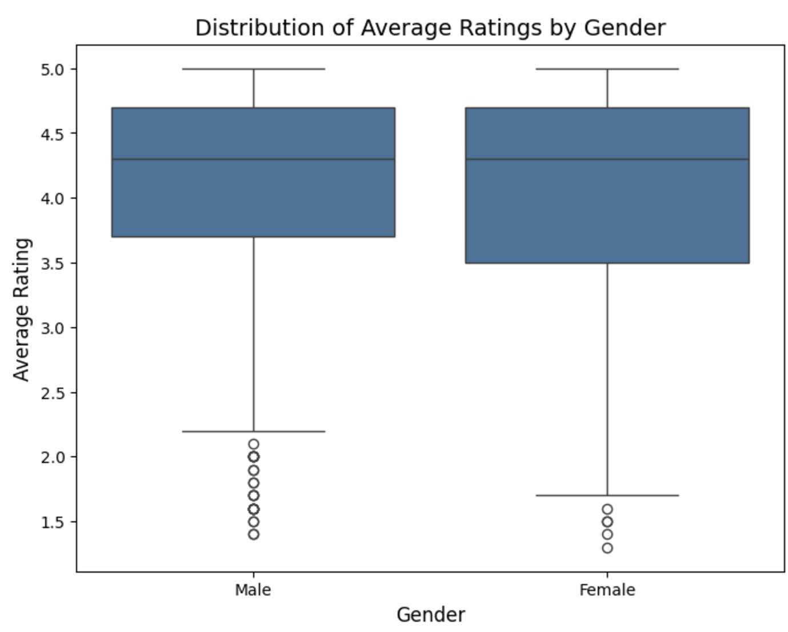

What we did: To investigate potential gender bias in professor ratings, we conducted a linear regression analysis with the dependent variable as the average rating and gender as a key predictor. We chose linear regression as we could factor in the potential confounders such as the proportion of students retaking the course, the number of online ratings, total ratings, average difficulty, and whether the professor received a "pepper" tag available in the dataset. Observations with missing values in the “proportion retaking” variable were dropped, resulting in a dataset with 919 rows (569 male and 350 female professors).
What we found: The OLS results indicate no statistically significant gender bias in average ratings. The coefficient for ‘male gender’ (-0.0057, p=0.800) suggests that, after controlling for other factors, gender does not play a meaningful role in predicting ratings (this is supported by the box plot which shows an overlapping distribution of mean ratings between male and female). On the other hand, other variables showed stronger associations with ratings. Professors with higher proportions of students retaking their courses (coef = 0.0261, p < 0.001) and those who received a ‘pepper’ tag (coef=0.2203, p < 0.001) were significantly more likely to have higher average ratings. Conversely, the average difficulty had a negative impact on ratings (coef=-0.1827, p < 0.001), reflecting that professors perceived as more difficult tended to receive lower scores.
The model captures an R-squared value of 0.853, meaning that 85.3% of the variance in ratings is explained by the included predictors. While the model captures strong associations for factors like difficulty and the "pepper" tag, gender (whether one is male) did not emerge as a significant predictor. These findings suggest that other variables discussed above have a stronger influence on professor ratings than gender. On top of what we stated above in the “Common assumptions/limitations”, this analysis assumes that the relationship between gender and average ratings is adequately captured by the included variables. Therefore, a major limitation of the conclusion is the exclusion of potential confounding variables, such as differences in academic disciplines, teaching methods, or the inherent biases of students who provide ratings etc. Additionally, the imposed threshold of 25 ratings may exclude professors with fewer reviews, potentially limiting the generalizability of the findings.